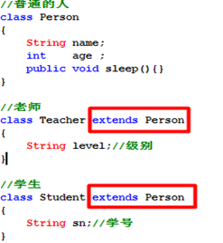

什么是继承关系:
基于某个父类对对象的定义加以拓展，而产生新的子类定义，子类可以继承父类原来的某些定义，也可以增加原来父类所没有的定义，或者覆写父类中的某些特性。
从面向对象的角度上说：继承是一种从一般到特殊的关系，是一种“is a”的关系，即子类是对父类的拓展，是一种特殊的父类，比如：狗是动物的一种特殊情况，狗属于动物。
--------------------------------------------------------------------------
在Java语言中,存在多个类的时候,我们使用”extends”关键字来表示子类和父类之间的关系.
语法格式: 在定义子类的时候来表明自己需要拓展于哪一个父类.
public class 子类类名 extends 父类类名
{
编写自己特有的状态和行为
}
--------------------------------------------------------------------------
在Java中,类和类之间的继承关系只允许单继承,不允许多继承.
也就是说一个类A,只能有一个直接的父类,不能出现类A同时继承于
类B和类C.
但是,Java中允许多重继承.
多重继承例子：
动物有胎生动物和卵生动物之分，胎生动物有老虎，老虎又分华南虎，
东北虎，孟加拉虎等。
--------------------------------------------------------------------------
在Java中除了Object类之外,每一个类都有一个直接的父类.
比如:class Student extends Person{}
我们就说此时Student的直接父类是Person.
问题: class Person{} ,此时Person的父类又是谁?
Object类是Java语言的根类(老祖宗,任何类都是Object的子类.)
class Person{} 等价于 class Person extends Object{}
Object类要么是一个类直接父类,要么是一个类间接父类.
--------------------------------------------------------------------------
继承关系的作用:
1):解决了代码的重复问题.
2):真正的作用,表示出一个体系.

先写父类还是先写子类:
一般的,我们在开发工程中先编写多个自定义类,写完之后,发现多个类之间存在共同的代码,此时可以抽去出一个父类.
我们以后做开发,都是基于框架/组件来做的,我们是在别人的基础之上,继续做开发.
好比,别人提供清水房,我们只需要在清水房的基础之上装修,就可以使用.
以后,我们定义新的类去继承于框架中/组件中提供的父类.
---------------------------------------------------------------------
子类继承父类之后,可以拥有父类的某一些状态和行为(子类复用了父类的功能或状态).
子类到底继承了父类的哪些成员(根据访问修饰符来判断):
1):如果父类中的成员使用public修饰,子类继承.
2):如果父类中的成员使用protected修饰,子类也继承,即使父类和子类不在同一个包中.
3):如果父类和子类在同一个包中,此时子类可有继承父类中 缺省修饰符的成员.
4):如果父类中的成员使用private修饰,子类打死都继承不到.因为private只能在本类中访问.
5):父类的构造器,子类也不能继承,因为构造器必须和当前的类名相同.
请注意:不要去背文字,立马写代码去证明.
方法覆盖
场景:
子类拓展了父类，可以获得父类的部分方法和成员变量。可是当父类的某个方法不适合于子类本身的特征时，此时怎么办？
如:企鹅(Penguin)和鸵鸟(Ostrich)是鸟类中的一个特殊品种，所以企鹅/鸵鸟类是鸟类的一个子类，但是鸟类有飞翔的功能，但是对应企鹅/鸵鸟，飞翔的行为显然不适合于它。
此时肿么办?
方法覆写的原则（一同两小一大）：Override
一同：
① 实例方法签名必须相同。 (方法签名= 方法名 + 方法的参数列表)
两小：
② 子类方法的返回值类型是和父类方法的返回类型相同或者是其子类。
子类可以返回一个更加具体的类.
③ 子类方法声明抛出的异常类型和父类方法声明抛出的异常类型相同或者是其子类。
ü子类方法中声明抛出的异常小于或等于父类方法声明抛出异常类型；
ü子类方法可以同时声明抛出多个属于父类方法声明抛出异常类的子类(RuntimeException类型除外)；
一大：
④ 子类方法的访问权限比父类方法访问权 限更大或相等。
private修饰的方法不能被子类所继承,也就不存在覆盖的概念.
判断是否是覆写方法的必杀技：@Override标签：若方法是覆写方法，在方法前或上贴上该标签， 编译通过，否则，编译出错。
只有方法存在覆盖的概念,字段没有覆盖.
方法覆盖解决的问题: 当父类的某一个行为不符合子类具体的特征的时候,此时子类需要重新定义父类的方法,并重写方法体.
方法重载和方法覆盖(方法重写)的区别:
方法重载: Overload
方法重写: Override
批判,本身二者一点关系都没有,仅仅只是因为名字很像.
-------------------------------------------------------------------
方法重载: Overload
作用: 解决了同一个类中,相同功能的方法名不同的问题.
既然是相同的功能,那么方法的名字就应该相同.
规则: 两同一不同.
同类中,方法名相同,方法参数列表不同(参数类型,参数个数,参数顺序).
方法重写: Override
作用:解决子类继承父类之后,可能父类的某一个方法不满足子类的具体特征,此时需要重新在子类中定义该方法,并重写方法体.
规则: 一同两小,一大.
一同:父类和子类的方法签名是相同的,所以,建议:直接拷贝父类中方法的定义到子类中,再重写方法体,就OK了.
Super关键字
需求:在子类中的某一个方法中,去调用父类被覆盖的方法.
此时的解决方案:使用super关键字.
什么是super:
this: 当前对象,谁调用this所在的方法,this就是哪一个对象.
super: 当前对象的父类对象.
子类初始化过程:创建子类对象的过程.
在创建子类对象之前,会先创建父类对象.
调用子类构造器之前,在子类构造器中会先调用父类的构造器,
默认调用的是父类无参数构造器..
1): 如果父类不存在可以被子类访问的构造器,则不能存在子类.
2):如果父类没有提供无参数构造器,此时子类必须显示通过super语句去调用父类带参数的构造器.


super关键字的使用场景:
1):可以使用super解决子类隐藏了父类的字段情况.该情况,我们一般不讨论,因为破坏封装.
2):在子类方法中,调用父类被覆盖的方法,引出super的例子,此时必须使用super.
3):在子类构造器中,调用父类构造器,此时必须使用super语句:super([实参]).
所谓隐藏就是“遮蔽”的意思。
① 满足继承的访问权限下，隐藏父类静态方法：若子类定义的静态方法的签名和超类中的静态方法签名相同，那么此时就是隐藏父类方法。注意：仅仅是静态方法,子类存在和父类一模一样的静态方法.
② 满足继承的访问权限下，隐藏父类字段：若子类中定义的字段和超类中的字段名相同(不管类型)，此时就是隐藏父类字段，此时只能通过super访问被隐藏的字段。
③ 隐藏本类字段：若本类中某局部变量名和字段名相同，此时就是隐藏本类字段，此时只能通过this访问被隐藏的字段。
-----------------------------------------------
static不能和super以及this共存.
Object类是Java语言的根类,要么是一个类的直接父类,要么就是一个类的间接父类.
class ABC{} 其实等价于 class ABC extends Object{}
------------------------------------------------------------------------------
所有对象（包括数组）都实现这个类的方法,这句话如何理解?
------------------------------------------------------------------------------
为什么Object是所有类的根类,到底什么是Object.
Object本身指对象的意思, 我们发现所有的对象都具有某一些共同的行为,所以,我们抽象出一个类:Object,表示对象类,其他都会继承于Object类,也就拥有Object类中的方法.
引用数据类型: 类/接口/数组,,引用类型又称之为对象类,所谓的数组变量名称,应该指数组对象.
Object类的常见方法:
1): protected void finalize() :当垃圾回收器确定不存在对该对象的更多引用时，由对象的垃圾回收器调用此方法。
垃圾回收器在回收某一个对象之前,会先调用该方法,做扫尾操作. 该方法我们不要去调用.
2): Class getClass() :返回当前对象的真实类型。
3): int hashCode(): 返回该对象的哈希码值,hashCode决定了对象再哈希表中的存储位置,不同对象的hashCode是不一样的.
4): boolean equals(Object obj) :拿当前对象(this)和参数obj做比较.
在Object类中的equals方法,本身和 “ == ”符号相同,都是比较对象的内存地址.
官方建议:每个类都应该覆盖equals方法,不要比较内存地址,而去比较我们关心的数据.,因为我们关系的是内容数据,而不是内存地址.
比如:两个学生对象,我们不管是如何new出来的,只要学号相同我就应该认为是同一个对象.
两个字符串,只要内容相同,我们就认为是同一个字符串.
5):String toString():表示把一个对象转换为字符串.
打印对象时,其实打印的就是对象的toString方法.
System.out.println(obj对象);等价于 System.out.println(obj对象.toString());
默认情况下打印对象,打印的是对象的十六进制的hashCode值,但是我们更关系对象中存储的数据.
官方建议我们:应该每个类都应该覆盖toString,返回我们关心的数据.
学了继承关系,我们知道继承关系是一种”is A”的关系,也就说子类是父类的一种特殊情况
问题: 子类的对象是动物?
既然子类是一种特殊的父类,那么我们可不可以认为狗对象/猫对象就是动物类型的对象.
Animal d = new Dog(); //创建一只狗对象
Animal c = new Cat(); //创建一只猫对象
--------------------------------------------------------------
当我的代码变成以下的样子的时候,多态就产生了:
Animal a = new Dog();
对象(a)具有两种类型:
编译类型: 声明对象变量的类型,Animal,表示把对象看出什么类型.
运行类型: 对象的真实类型,Dog.运行类型--->对象的真实类型.
编译类型必须是运行类型的父类/或相同.
当编译类型和运行类型不同的时候,多态就出现了.
所谓多态: 对象具有多种形态,对象可以存在不同的形式.
Animal a = null;
a = new Dog(); //a此时表示Dog类型的形态
a = new Cat(); //a此时表示Cat类型的形态
--------------------------------------------------------------------
多态的前提:可以是继承关系(类和类)/也可以是实现关系(接口和实现类),在开发中多态一般都指第二种.
--------------------------------------------------------------------
我家里养了一只动物,名字叫”乖乖”,此时”乖乖”可以有多种形态;
乖乖 是狗, 乖乖的叫声: one one one.
乖乖 是猫, 乖乖的叫声: 喵 喵 喵.
多态的特点:
把子类对象赋给父类变量,在运行时期会表现出具体的子类特征(调用子类的方法).
Animal a = new Dog();
多态的好处:
需求:给饲养员提供一个喂养动物的方法,用于喂养动物.
没有多态:
发现,针对于不同类型的动物,我们得提供不同的feed方法来喂养.
不优雅.
我想,只提供一个方法,就能统一喂养所有动物.
存在多态:
统一了喂养动物的行为。
从上述例子，可以得知多态的作用：当把不同的子类对象都当作父类类型来看待，可以屏蔽不同子类对象之间的实现差异，从而写出通用的代码达到通用编程，以适应需求的不断变化。
多态时方法调用问题:
前提:必须先存在多态情况:
存在父类:SuperClass,子类:SubClass,方法:doWork.
--------------------------------------------------------------------
测试代码:
SuperClass clz = new SubClass();//多态
clz.doWork();//???输出什么结果


基本数据类型转换:
自动类型转换: 把小类型的数据 赋给 大类型的变量. (此时的大和小表示的容量范围)
byte b = 12; byte是1个字节
int i = b; int是4个字节
强制类型转换: 把大类型的数据赋给 小类型的变量.
short s = (short) i ;short是2个字节
-------------------------------------------------------------------------------
引用类型的转换:
引用类型的大和小,指的是 父类 和子类的关系.
自动类型转换: 把子类对象赋给父类变量(多态).
Animal a = new Dog();
Object是所有类的根类:
Object obj = new Dog();
强制类型转换: 把父类类型对象赋给子类类型变量(当时该父类类型变量的真实类型应该是子类类型).
Animal a = new Dog();
Dog d = (Dog)a;
instanceof 运算符: 判断该对象是否是某一个类的实例.
语法格式：boolean b = 对象A instanceof 类B; // 判断 A对象是否是 B类的实例,如果是,返回true.

组合关系
继承关系: 子类可以继承到父类中部分的成员,那么此时子类是可以修改到父类的信息的.
继承关系破坏封装,为了复用代码可能会让子类具有不该具有的功能.
-----------------------------------------------------------------------------------
为什么引入继承: 为了代码复用问题.
解决代码复用问题,不一定非要使用继承,也可以使用”包含关系”(has A).
我没钱,但是我想开豪车,我想吃火锅:
方式1: 任一个富豪干爹. 继承关系:
方式2: 把一个富豪绑架在我家里,挟天子以令诸侯! 组合关系/包含.
如果A类为了得到B的功能行为:
如果A类是B类的一种特殊情况,我们就应该采用继承来实现.
否则使用组合方式.